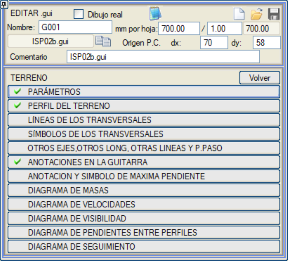Bu bölüm, arazi enkesitleriyle, ISPOL#.per dosyalarıyla ve diğer öğelerle ilişkili çeşitli elemanları tanımlamayı sağlar.
Tanımlanacak tüm parametreler genel olarak uygulanır, böylece güzergahımızın tasarımından bilgi çıkarma ve mümkün olan en fazla veriyi gösterme hedefine ulaşılır.
Parametreler
Buradan, aşağıda açıklanan boykesitin genel parametreleri ayarlanır. Bu seçeneklerin çoğu karşılaştırma düzlemine atıfta bulunur. Bu düzlem, her paftada kırmızı kot/kotlar ve arazi arasındaki en düşük kottan otomatik olarak hesaplanır, ancak kullanıcı bazı konularda müdahale edebilir.
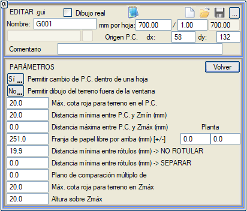
- 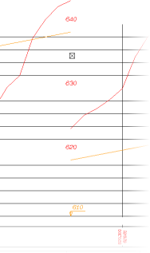Pafta içinde K.D. değişimine izin ver: Her paftada (EVET olarak ayarlandığında) veya sadece her birinin başında (HAYIR) karşılaştırma düzlemini değiştirme imkanı verir. Bu şekilde, örneğin, çizim yukarıdan dışarı çıkarsa, arazinin gösterilmeye devam etmesini sağlayan bir karşılaştırma düzlemi değişikliği meydana gelir, sağdaki şekilde gösterildiği gibi.
- Arazi çiziminin pencere dışına çıkmasına izin ver: Eğer EVET olarak ayarlanırsa, arazi belirlenen sınırların dışına çıktığında yine de gösterilir.
- K.D.'de arazi için maks. kırmızı kot farkı: Kırmızı kot ile arazi arasında, arazinin karşılaştırma düzlemi hesaplamasına dahil olması için izin verilen maksimum kot farkıdır. Bu değer aşıldığında, karşılaştırma düzlemi hesaplanırken sadece paftadaki kırmızı kot/kotların en düşük kotunu dikkate alır.
- K.D. ile Zmin arası min. mesafe (mm): Boykesit ile karşılaştırma düzlemi arasında, kesişmemeleri için en azından korunacak olan mesafedir.
- K.D. ile Zmaks arası maks. mesafe (mm): Boykesitin, gösterilmesi için karşılaştırma düzlemine göre izin verilen maksimum mesafesidir (arazinin pencere dışında çizilmesine izin verilmediği sürece). Bu değer ve önceki, boykesit çizim penceresinin alt ve üst sınırlarını tanımlar ve her ikisi de kağıt milimetresi cinsinden ayarlanır.
- 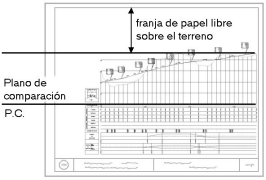Üstte serbest kağıt şeridi (mm): Paftanın üst kısmında, ilgili plan parçasının (alt pafta) gösterimine ayrılmış olan, kağıt milimetresi cinsinden genişliktir. Negatif bir değer girilirse, boşluğu üstte yerine altta bırakır. Herhangi bir plan gösterimi istenmiyorsa, burada 0 yazmalıdır.
Plan altındaki parametreler, planın alt paftasını iki yan boşlukla boyutlandırmayı sağlar. Bu boşluklardan herhangi biri eklenirse, boykesitin alt paftası planınkini kapsar, böylece boykesitin bilgi bandına, bu boşluk alanlarını kaplayan semboller veya lejantlar eklenebilir.
- Etiketler arası min. mesafe (mm) -> ETİKETLEME: Bilgi bandındaki iki notasyon sembolünün yerleştirme noktaları bu değerden daha küçükse, çakışmalarını önlemek için bir tanesi iptal edilir.
- Etiketler arası min. mesafe (mm) -> AYIR: Bilgi bandındaki notasyon sembolleri, çakışmalarını önlemek için bu minimum mesafe değerine göre yeniden konumlandırılır. ISP01B.gui bilgi bandı bu parametreyi 2,5 mm'lik bir değerle içerir. Hem bu parametre hem de önceki, kağıt milimetresi cinsinden ayarlanır.
- Karşılaştırma düzlemi katı: Sıfırdan farklı bir değer girilirse, bu değeri kullanır. Aksi takdirde, dikey ölçeğe ve referans kotları işaretlemek için eşit aralıklı yatay çizgiler konulup konulmadığına bağlı olduğunu dikkate alarak, en yakın tam sayıya yuvarlayarak hesaplamaya devam eder.
- Zmaks'ta arazi için maksimum kırmızı kot farkı. Gerçek metre cinsinden maksimum kotta araziyi dikkate almak için maksimum kırmızı kot farkı.
- Zmaks üzeri yükseklik. Maksimum Z'nin üzerinde, pafta milimetresi cinsinden yükseklik.
Arazi Profili
Buradan, arazi çizgisinin gösterimiyle ilgili çeşitli parametreler yapılandırılır:
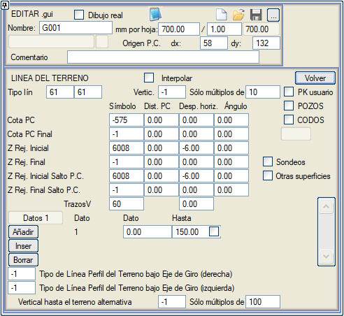
| Enterpolasyon |
Varsayılan olarak, veriler sadece enkesitlerin bulunduğu KM'lerde gösterilir. Bu kutucuk etkinleştirilirse, program, enkesit bulunmayan KM'lerdeki verileri, hemen önceki ve sonraki enkesitler arasında bir enterpolasyon yaparak hesaplar.
|
Çizgi Tipi
|
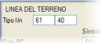Arazi boykesitinin temsil edileceği iki çizgi tipi: ilki yarma, ikincisi dolgu için. Negatif bir değer, arazi çizgisinin gösterilmemesine neden olur.
|
Dikeyler
|
Boykesit gridinin dikey çizgilerinin temsil edileceği çizgi tipi. Bu çizgiler arazi altında temsil edilir. Negatif bir değer, bu çizgilerin gösterilmemesine neden olur.
|
Sadece ... katları
|
Sadece burada belirtilen değerin katı olan KM'ler gösterilecektir. Bu değer 0 ise, o zaman bir enkesitin bulunduğu tüm KM'ler gösterilir.
|
| Sondajlar | Sondaj verilerini, Kırmızı Kotlar menüsünde gösterildiği gibi çizer. K.D. ile Z min arası min. mesafe (mm)'de, paftanın dikey ölçeği için yeterli bir değer belirtmeye dikkat etmek gerekir ki en derin kayalar Arazi - Parametreler'de gösterilebilsin. |
Kullanıcı KM
|
Sadece bir değerin katlarını etiketlerken, KM eşitliklerinden türetilen kullanıcı KM'lerinin referans alınması imkanı.
|
BACALAR/DİRSEKLER
|
Eğer BACALAR veya DİRSEKLER kutucukları işaretlenirse, o zaman bir baca/dirsek bulunan enkesitler de gösterilecektir. Metinlerin çakışmasını önlemek için, bu iki seçenekten biri işaretlendiğinde, kağıt mm cinsinden bir değer belirtmek için bir kutu etkinleştirilir, böylece katlı enkesit bir baca/dirsekten o değerden daha yakınsa, katlı enkesit etiketlenmez.
Doğru çalışması için, katların yanı sıra, bacaların KM'lerinde ve plan ile boykesitin karakteristik noktalarında arazi enkesitlerini çıkarmak gerekir.
|
KD Kotu
|
Burada, karşılaştırma düzleminin konumuna ve kotuna atıfta bulunan sayısal etiket için kullanılacak sembolün tipi ve konumu belirtilir.
|
Son KD Kotu
|
KD Kotu ile aynıdır, ancak bu, bilgi bandının sonuna etiketlenir.
|
Grid Baş. Z
|
Burada, gridin yatay çizgilerindeki kotu temsil eden etiketler için kullanılacak sembolün tipi ve konumu belirtilir. [SABİT KILAVUZ ÇİZGİLERİ] → [EŞİT ARALIKLI YATAY ÇİZGİLER]'de tanımlanan her bir yatay çizgi için bir etiket kullanılacaktır.
|
Grid Son Z
|
Grid Baş. Z ile aynıdır, ancak bilgi bandının sonuna etiketlenir.
|
Grid Baş. Z K.D. Atlaması
|
Grid Baş. Z ile aynıdır, ancak bir pafta içinde karşılaştırma düzlemi atlaması olduğu durumlar için.
|
| Grid Son Z K.D. Atlaması |
Grid Son Z ile aynıdır, ancak bir pafta içinde karşılaştırma düzlemi atlaması olduğu durumlar için. |
Dikey Çizgiler
|
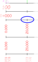Bilgi bandının dikey çizgilerinin çizgi tipi. Bu çizgiler bu iletişim kutusunun alt kısmında eklenir. Her çizgi, alt sınır başlangıç ve üst sınır bitiş olmak üzere iki veri ile tanımlanır. Bir çizgi sütunu tanımlandıktan sonra, bu, Sadece ... katları'nda belirtilene göre sistematik olarak tekrarlanır. Negatif bir değer, çizgilerin gösterilmemesine neden olur.
İlk çizgi için yükseklik, sabit kılavuzun yatay ve dikey çizgileri için kullanılan parametrelerle aynı şekilde otomatik olarak hesaplanabilir.
|
Dever ekseni altındaki arazi profili çizgi tipi
|
Her bir taşıt yolu (sağ ve sol) için dever ekseni altındaki arazinin temsil edileceği çizgi tipi.
|
| Alternatif araziye kadar dikey | Karşılaştırma düzleminden araziye kadar Sadece ... katları değeriyle ikinci bir dikey çizgi tanımlar. | | Diğer yüzeyler | BIM modellerinden elde edilen jeoteknik profiller gibi kapalı cisimlerin TTP/TTG dosyalarından gelen yüzeyler de dahil olmak üzere, arazi enkesitlerinde görünen diğer yüzeylerin eksenle kesişimini çizmeyi sağlar. |
Enkesitlerden Alınan Çizgiler
Arazi boykesitiyle birlikte, ISPOL#.per dosyasında (burada # güzergah numarasıdır) görünen noktalara karşılık gelen diğer boykesitler de çizilebilir. Bunun için hangilerinin (yüzey ve kod enkesit noktasını tanımlar) ve ne şekilde gösterilmek istendiğini belirtmek gerekir.
Çizgi
|
Boykesitin temsil edileceği çizgi tipi. Negatif bir değer, ilgili boykesitin gösterilmemesine neden olur. |
Yüzey
|
Bir kodun tanımlandığı ve gösterilecek olan yüzey. Yüzeylerin kodları yoksa (araziler), kod alanı dikkate alınmaz ve sadece ilk noktanın eksene sıfır mesafede olduğu kontrol edilir. |
Kod
|
Boykesit boyunca gösterilecek noktanın kodu.
Demiryolları için şunlar çıkarılabilir:
- Alçak Ray altındaki yüzeylerden bir nokta, kod = -1000 kullanılarak.
- Veya Yüksek Ray altından, kod = -2000 kullanılarak.
Bu durumlarda, çift hat durumunda sadece taraf değeri kullanılır. Ayrıca bkz: Çizimler/Boykesit/Arazi/Enkesit Sembolleri, Alçak Ray ve Yüksek Ray için Sembol tanımı.
|
T
|
Eksenin sol veya sağ tarafı, önceki kodun referans aldığı.
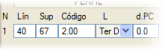Arazi S veya Arazi I seçenekleri, belirtilen kodun dikeyindeki araziye atıfta bulunur, onu çizmek veya kotunu etiketlemek için...
Zmin ve Zmaks seçenekleriyle, geometrik eksen konumunda, kapalı veya geri dönüşlü olabilen bir yüzeyin minimum ve maksimum kotunu çıkarmak mümkündür, bu nedenle o noktadan birkaç kez geçebilir. Aynı yüzey için iki veri satırı kullanarak, biri Zmin ve diğeri Zmaks ile, örneğin konsollu bir yüzeyden enkesitler keserek elde edilen bir sanat yapısı tabliyesinin bir temsilini elde edebiliriz.
|
K.D. mes.
|
Eğer bu kutucuğa sıfırdan farklı bir değer yazılırsa, çizginin gerçek kotu dikkate alınmaz ve belirtilen konumda yatay bir bölüm olarak çizilir.
|
Böylece, aşağıda gösterilen örneğe göre, 10 numaralı çizgi tipiyle, sağ tarafın 68 numaralı yüzeyinin 600 kodundan (hendek tabanına karşılık gelen) geçen boykesit temsil edilecektir:
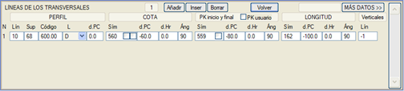
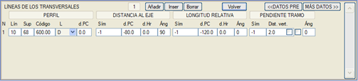
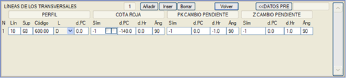
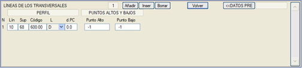
Yüzey ve kodla belirtilen noktaya karşılık gelen profilin çizilmesinin yanı sıra, o noktayla ilgili verileri göstermek de mümkündür. Özellikle, kotunu, boykesitin başlangıç ve bitiş KM'lerini, toplam uzunluğunu, eksene olan mesafesini, göreli uzunluğunu, kesim eğimini, kırmızı kot farkını ve eğim değişikliğinin KM ve kotunu göstermek mümkündür (bunlardan bazılarına [DAHA FAZLA VERİ>>] butonuyla erişilir).
KM eşitliklerinden türetilen kullanıcı KM'sini etiketleme seçeneği seçilebilir.
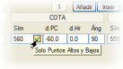Bu seçeneklerden bazılarının, örneğin sadece tepe ve çukur noktalarının kotlarını etiketlemek, söz konusu noktanın kotu ile bir önceki noktanın kotu arasındaki farkı etiketlemek vb. için ek kutucukları vardır.
Göreli uzunluk, bir duvar veya hendek gibi elemanların uzunluk gelişimini verme imkanı sağlar. Kesim eğimi, kesit noktasından çıkarılan çizgi üzerine (veya bitişik kutucuk işaretlenirse bilgi bandı üzerine) boyuna eğimi (% olarak) etiketlemeyi sağlar. Hendek tabanına (kod 600/101) bağlı veriler etiketlendiğinde, eğer hendek kotu kırmızı kotlar menüsünde bir boykesitten tanımlanmışsa, bu bölümdeki ilgili kutucuğu işaretleyerek o boykesitin eğiminin kesim eğimi olarak etiketlenmesini sağlayabiliriz.
Kırmızı kot farkı, herhangi bir yüzeyin tüm noktalarında doğal araziye göre kot farkını sağlar.
Etiketleyebileceğimiz diğer değerler: Eğim Değişikliği KM'si ve Eğim Değişikliği Z'si.
Çizginin tepe ve çukur noktalarını bir sembolle işaretlemek mümkündür.
Önceki özelliklerin her birinin gösterimi, bir etiket (negatif değerler gösterilmemesine neden olur), bir karşılaştırma düzlemine olan mesafe, bir yatay öteleme ve bir açı ile ilişkilidir, kesim eğimi hariç, ona her kesime göre bir dikey mesafe atanır ve ona bir yatay öteleme atamak anlamsızdır.
Karşılaştırma düzleminden seçilen yüzeye kadar dikey çizgiler çizme imkanı.
Enkesit Sembolleri
Enkesit çizgileri seçeneğine benzer bir seçenek, farkı, bu durumda boykesitin enkesitlerde bulunan belirli bir sembol tipinden oluşturulmasıdır.
Bu elde edilen boykesitten aşağıdaki verileri göstermek mümkündür:
- Kot
- Başlangıç ve bitiş KM'si
- Uzunluk
- Eksene olan mesafe
- Göreli uzunluk
- Kesim eğimi
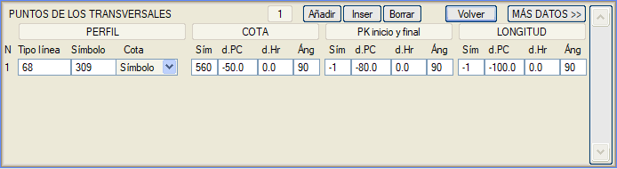
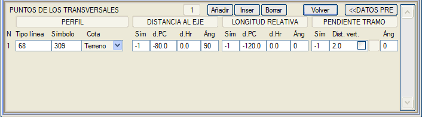
Önceki özelliklerin her birinin gösterimi, bir etiket (negatif değerler gösterilmemesine neden olur), bir karşılaştırma düzlemine olan mesafe, bir yatay öteleme ve bir açı ile ilişkilidir, kesim eğimi hariç, ona her kesime göre bir dikey mesafe atanır ve ona bir yatay öteleme atamak anlamsızdır:
Çizgi tipi
|
Boykesitin çizgi tipi. Negatif bir değer gösterilmemesine neden olur.
|
Sembol
|
Boykesitin oluşturulduğu enkesit sembollerinin tipi.
Demiryolları için şunlar çıkarılabilir:
- Alçak Ray: Sembol = -1000 (Çift hatta sol hat için Sim= -1001).
- Yüksek Ray: Sembol = -2000 (Çift hatta sol hat için Sim= -2001).
Ayrıca bkz: Çizimler/Boykesit/Arazi/Enkesit Çizgileri, Alçak Ray ve Yüksek Ray için Kod tanımı.
|
Kot
|
Çıkarılan kotun sembolün mü yoksa sembolün konumundaki arazinin mi kotu olduğu seçilebilir.
Tüneller durumunda arazi seçilirse, Eklentiler -> Parametreler'deki seçeneğin etkinleştirilmesi gerekir: [ ] Tünel enkesitlerinde araziyi koru.
|
Smb
|
İlgili boykesit verisinin temsil edileceği sembol tipi (etiket).
|
K.D. mes.
|
İlgili verinin gösterileceği karşılaştırma düzlemine göre dikey mesafe.
|
Y. Öte
|
İlgili verinin etiketlerinin yatay ötelenmesi.
|
Açı
|
İlgili verinin etiketlerinin gösterileceği açı.
|
Göreli uzunluk, bir otokorkuluk gibi elemanların uzunluk gelişimini verme imkanı sağlar. Kesim eğimi, kesit noktasından çıkarılan çizgi üzerine (veya bitişik kutucuk işaretlenirse bilgi bandı üzerine) boyuna eğimi (% olarak) etiketlemeyi sağlar.
Diğer Güzergahlar, Diğer Boykesitler, Diğer Çizgiler ve Kontrol Noktaları
Bu alt menüden, KIRMIZI KOTLAR menüsünden eklenen bilgilerin şekli ve dağılımı tanımlanır.
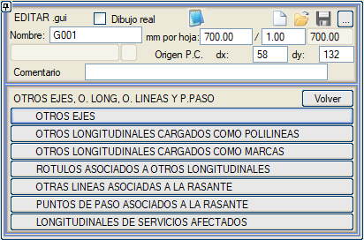
Diğer Güzergahlar
Boykesit paftasında diğer güzergahlarla kesişimleri göstermeyi sağlar.
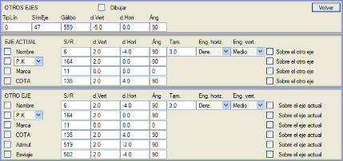
Çiz
|
Güzergahların gösterilmesi için bu kutucuğun işaretlenmesi gerekir.
|
ÇizgiTipi
|
Diğer güzergahların temsil edileceği çizgi tipi. Negatif bir değer çizilmemesine neden olur.
|
GüzSembolü
|
Her bir güzergahı tanımlamak için kullanılacak etiket. Varsayılan olarak, Güzergah # şeklinde bir etiket olan 47 tipi önerilir (# güzergah numarasıdır). Negatif bir değer, etiketin görünmemesine neden olur.
|
Gabari
|
Kırmızı kot ile güzergahlar arasındaki kot farkını göstermek için kullanılan sayısal etiket. Negatif bir değer, bu değerin gösterilmemesine neden olur.
|
Dikey Öte.
|
Gabari etiketlerinin dikey ötelenmesi.
|
Yatay Öte.
|
Gabari etiketlerinin yatay ötelenmesi.
|
Açı
|
Gabari etiketlerinin gösterileceği açı.
|
Yukarıdakilere ek olarak, kesişim noktasında ve kırmızı kot üzerinde etiketlemek için bir sembol (veya etiket) tipi, dikey ve yatay ötelemeler ve bir açı belirtmek mümkündür:
- Güzergahların kesişim KM'si veya Kazık No. Diğer güzergahın kesilen platformunun dışında güzergahların kesişim KM'sini veya Kazık Numarasını etiketlemeye olanak tanıyan 5 metrelik bir pay kabul edilir.
- Bir işaret, varsayılan olarak küçük bir dikey çizgi olan 11 numaralı sembol.
- Diğer güzergahın adı. Burada ayrıca etiketin boyutu ve bağlantı noktası belirtilmelidir. Bu etiketin, mevcut güzergahın kırmızı kotu yerine diğer güzergah üzerinde gösterilmesi imkanı sunulur.
- O noktadaki kırmızı kotun kotu.
Diğer güzergahlarda, onlara göreli kesişim KM'si veya Kazık No, bir işaret ve bu güzergahların kotu ve ek olarak iki güzergah arasındaki azimut ve şevlilik açısı etiketlenebilir.
Polyline Olarak Yüklenen Diğer Boykesitler
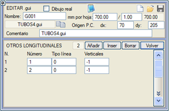Kırmızı kot/kotlar ve arazi dışındaki ek boykesitleri, özellikle KIRMIZI KOTLAR tasarım sekmesinde polyline olarak yüklenenleri göstermeyi sağlar. Bunun için, Kırmızı Kotlar menüsünde yüklediğimiz .lon dosyaları kadar veri eklemek yeterlidir:
Numara
|
Gösterilecek boykesiti belirtir.
|
Çizgi tipi
|
İlgili boykesitin temsil edileceği çizgi tipi.
|
İşaret Olarak Yüklenen Diğer Boykesitler
KIRMIZI KOTLAR'dan ([DİĞER BOYK.] → Çizgi tipine göre işaretler) oluşturulan işaretleri göstermeyi sağlar. Bu işaretlerin, bir boykesitin oluşturulduğu yüzeyin farklı çizgileriyle kesişimlerinden geldiğini ve bu işaretlerle ilişkili etiketlerin kesişen çizgi tiplerinin adları olduğunu hatırlamak gerekir.
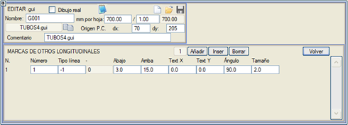
Her bir işaret boykesiti için şunları belirtmek gerekir:
Numara
|
Gösterilecek işaret boykesitini belirtir.
|
Çizgi tipi
|
İşaretler sadece dikey çizgilerdir. Hangi tiple temsil edilecekleri burada belirlenir. Negatif bir değer belirtilirse, bu çizgiler geldikleri tiple temsil edilir.
|
Aşağı / Yukarı
|
İşaretler kırmızı kottan başlar ve o noktadan aşağı ve yukarı uzunlukları burada belirtilir.
|
Metin X / Metin Y
|
Metin (boykesit oluşturulduğunda kesişen çizgi tipinin adıdır), varsayılan olarak işaretin ardından ve yukarıda yerleştirilir. Bu değerler, metnin o noktaya göre yatay ve dikey ötelemeleridir.
|
Açı
|
Metnin yerleştirilmeye başlandığı noktaya göre açısı.
|
Boyut
|
Metnin boyutu için ölçek faktörü.
|
Diğer Boykesitlerle İlişkili Etiketler
Diğer boykesitler (hem polyline hem de işaret tipi) tanımlandıktan sonra, genellikle onlar hakkında ek bilgi göstermek ilginç olacaktır. Ne etiketlenmek istendiği ve ne şekilde yapılacağı bu menüden belirtilir.
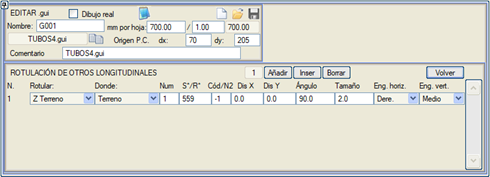
No sütununda etiketlenecek boykesit belirtilmelidir. Aynı boykesitin birkaç özelliğini göstermek isteniyorsa, diyalog kutusuna gösterilecek özellik kadar veri eklenecek ve her biri için aynı No belirtilecektir.
Tanımlanan her boykesit için şunlar etiketlenebilir:
- Arazi kotu (Z Arazi).
- Kırmızı kot (Z Kırmızı Kot).
- Diğer boykesitin kotu (Z Diğer Boyk).
- Mevcut eksene olan mesafe (Eks. Mes.).
- Mevcut eksene göre KM (KM).
- İşaretle ilişkili metin (İş. Metni): Diğer boykesitin işaret tipi olması durumunda, o işaretle ilişkili metni (bu da çizgi tipinin adından gelir) göstermek mümkündür. Bu durumda, kullanılacak etiket tipi (stili) belirtilir. Bir metin olduğu için, yatay ve dikey bağlantı verileri (etiketin yerleştirme noktası) ile ilişkilendirileceklerdir, bu veriler sırasıyla Yatay Bağ. ve Dikey Bağ. açılır menülerinde doldurulacaktır.
- Kırmızı kot farkı (Kırmızı Kot Farkı): Kırmızı kot ile diğer boykesit arasındaki kot farkı.
- Başka bir boykesitle kot farkı (ZN1-ZN2): İlgili diğer boykesit, Kod/N2 verisine karşılık gelen sütunda belirtilir.
- İki boykesit arasındaki gerçek mesafe (D3D(N1-N2)): kot farkını ve eksene olan mesafeler arasındaki farkı dikkate alarak.
- Gözlemler: Kırmızı kotlar menüsünde tanımlanan bir gözlem, diğer boykesitin her paftadaki ilk görünümünde etiketlenir.
Ve bu etiket gruplarının her biri, arazi, kırmızı kot, diğer boykesit boykesitine veya bilgi bandı alanına göre yerleştirilebilir. Ayrıca, her veride kullanılacak sembol (etiket) tipi, dikey ve yatay ötelemeler, açı ve ölçek faktörü (boyut) belirtmek gerekecektir.
Kırmızı Kota Bağlı Diğer Çizgiler
İlgili kutucuk etkinleştirilirse, boykesitte KIRMIZI KOTLAR tasarım ekranından tanımlanan diğer çizgiler de gösterilecektir.
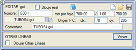
Kırmızı Kota Bağlı Kontrol Noktaları
Ayrıca, bir tasarımın yorumlanması için bazen vazgeçilmez veriler olan kontrol noktalarını etiketlemek de mümkündür.
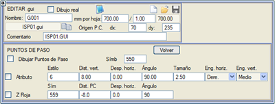
- Kontrol noktalarını çiz: Bu kutucuk işaretlendiğinde, kontrol noktası belirtilen etiketle (varsayılan olarak, sembol 550) temsil edilir. Görünen sayısal değer, plandaki eksene olan mesafeye karşılık gelir.
- Öznitelik: Her bir kontrol noktasıyla ilişkili alfanümerik özniteliği, belirtilen metin stili, kontrol noktasına göre yatay ve dikey ötelemeler, açı, boyut ve metnin yerleştirme noktası ile etiketler.
- Kırmızı Kot Farkı: Boykesitte kırmızı kotla olan kot farkını, belirtilen etiket, yatay ve dikey ötelemeler ve açıyla göstermeyi sağlar.
Etkilenen altyapıların boykesitleri
KIRMIZI KOTLAR'dan ([DİĞER BOYK.] -> Etkilenen Altyapılarla Kesişim Boykesitleri) yüklenen Etkilenen Altyapıları göstermeyi sağlar. Gösterim, hatların şevlilik açılarını içeren .lon dosyasından ve parametrik çizgi tanımından (QA) elde edilir.
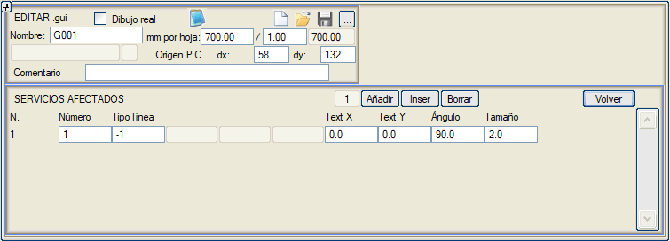
Her altyapı boykesiti için şunları belirtmek gerekir:
Yüklenen DİĞER BOYK. Menüsünde yüklenen elemanın Numarası.
Çizgi tipi ile temsil edilecek, varsayılan olarak .lon oluşturmak için haritacılıkta kullanılanı kullanır.
Metnin Konumu (X,Y), açısı ve boyutu: L-çizgitipi adı etiketlenir.
Bilgi Bandındaki (Gitardaki) Notasyonlar
Bu, bu aracın en önemli menülerinden biridir, çünkü buradan bilgi bandı alanında hangi verilerin görüneceği belirtilir.
Her veri seti için, temsil edilecekleri sembol (etiket) tipinin yanı sıra karşılaştırma düzlemine olan mesafe, yatay öteleme ve açı belirtilmelidir.
Tüm kırmızı kot farkları ve kot farkları için bunları milimetre cinsinden etiketleme imkanı etkinleştirilir.
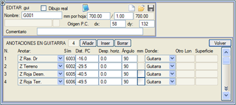
Gösterilebilecek veriler şunlardır:
- Ara mesafe (Ara Mesafe): Hemen önceki enkesite göreli mesafe.
- Kilometreye göreli mesafeler (KM'ye Mes.): Önceki kilometreye göreli mesafeler etiketlenir.
- Başlangıca olan mesafe (Başlangıca Mes.): Güzergahın başlangıcına göreli mesafeleri etiketler.
- Sağ kırmızı kot (Z K.Kot Sğ).
- Sağ ve sol kırmızı kot arasındaki kot farkı (Z_Sğ – Z_Sl).
- Sol kırmızı kot (Z K.Kot Sl).
- Sol ve sağ kırmızı kot arasındaki kot farkı (Z_Sl – Z_Sğ).
- Arazi kotu (Z Arazi).
- Yarmadaki kırmızı kot farkı (Z Kırmızı Yarma).
- Dolgudaki kırmızı kot farkı (Z Kırmızı Dolgu).
- Sol kırmızı kot için yarmadaki kırmızı kot farkı (Z Kırmızı Yar.Sl).
- Sol kırmızı kot için dolgudaki kırmızı kot farkı (Z Kırmızı Dol.Sl).
- Her enkesitin KM'sindeki güzergahın X ve Y koordinatları.
- Dever eksenlerinin konumundaki arazi kotu.
- Kullanıcının belirttiği diğer boykesitin kotu.
- Kazı yüzeyinden (L68) araziye yarmadaki kırmızı kot farkı (Z Kırmızı (68) Yarma)
- Kazı yüzeyinden (L68) araziye dolgudaki kırmızı kot farkı (Z Kırmızı (68) Dolgu)
- Kazı yüzeyinden (L68) eksendeki kırmızı kot farkı Z(68) eksende.
- Sağ dever (Dever S).
- Sol dever (Dever I).
- Sağ dever ekseni altındaki subrasant (yüzey 68) kırmızı kot farkı (Z Kırmızı (68) D.E. S)
- Sol dever ekseni altındaki subrasant (yüzey 68) kırmızı kot farkı (Z Kırmızı (68) D.E. I)
- Boru Örtüsü: Borunun örtü kalınlığını etiketleme imkanı.(Borunun üst dış kısmından araziye olan yükseklik).
- Sağ dever ekseni altındaki kırmızı kot (yüzey 67) kırmızı kot farkı (Z Kırmızı (67) D.E. S)
- Sol dever ekseni altındaki kırmızı kot (yüzey 67) kırmızı kot farkı (Z Kırmızı (67) D.E. I)
- Başlangıç KM'sine göreli mesafe (KM - KM_başlangıç)
- Enkesitler arası ara mesafe, iki enkesitin ortasına yazılır (Ortada AraMesafe)
- Kırmızı kotun eğimi % olarak (K.Kot Eğimi %)
Boru hatları durumunda, kırmızı kotta dikey düşüler olması muhtemeldir (KIRMIZI KOTLAR tasarımında [V] tuşu ile oluşturulur). Bu tür durumlar için aşağıdaki seçenekler mevcuttur:
- Bir düşey düşüden hemen önceki sağ kırmızı kot (Z K.KotSğ(önce)).
- Bir düşüden hemen önceki sağ ve sol kırmızı kot arasındaki kot farkı (Z_Sğ-Z_Sl(önce)).
- Bir düşey düşüden hemen önceki sol kırmızı kot (Z K.KotSl(önce)).
- Bir düşüden hemen önceki sol ve sağ kırmızı kot arasındaki kot farkı (Z_Sl-Z_Sğ(önce)).
- Bir düşey düşüden hemen sonraki sağ kırmızı kot (Z K.KotSğ(sonra)).
- Bir düşüden hemen sonraki sağ ve sol kırmızı kot arasındaki kot farkı (Z_Sğ-Z_Sl(sonra)).
- Bir düşey düşüden hemen sonraki sol kırmızı kot (Z K.KotSl(sonra)).
- Bir düşüden hemen sonraki sol ve sağ kırmızı kot arasındaki kot farkı (Z_Sl-Z_Sğ(sonra)).
Diğer gösterim seçenekleri şunlardır:
- Boru hattı güzergahlarında hendek tabanı kotu (Z Hendek Tabanı).
- Boru hattı güzergahlarında hendek tabanı kırmızı kot farkı (Z Kırmızı Hendek).
- Enkesit numarası (Enkesit Numarası). Arazi enkesiti numaralandırılmışsa, o numarayı gösterir. Kullanıcıya, enkesitleri numaralandırmak için ENKESİT DÜZENLEYİCİ → [DEĞİŞTİR 2] → Enkesit numaralandır'a başvurabileceği hatırlatılır. Ayrıca, enkesitler kesilirken (arazi enkesitlerini elde etmeye ilişkin diyalog kutusunun N sütunu) veya belirli dosyalar içe aktarılırken karakteristik KM'lerde enkesitler numaralandırılabilir. Dolayısıyla, bir arazi enkesit dosyasında, bu enkesitlerden bazıları numaralandırılmış olabilirken diğerleri olmayabilir. Varsayılan olarak, bir arazi enkesit dosyası numaralandırılmamıştır.
- Sağ kırmızı kotun kırmızı kot farkı (Z Kırmızı).
- Sol kırmızı kotun kırmızı kot farkı (Z Kırmızı Sl).
- Onlukların etiketlenmesi (Onluklar (KM)): KM'ye olan mesafe durumunda olduğu gibi çalışır, ancak bu durumda hektometreye göre.
- Üç boyutlu uzunluk (Uzunluk 3D): Plandaki güzergahın başlangıcından itibaren eğimi dikkate alarak gerçek uzunluğun etiketlenmesi. Örneğin, duvarlar, hendekler vb. ile ilişkili boykesitler için çok kullanışlıdır.
- Ara mesafe 3D: 3D ara mesafeyi etiketleyebilirsiniz. Eğer enkesitler, borularda 3D Uzunluklar olayı kullanılarak çıkarılmışsa (Enkesitler menüsü), bu mesafe boruların uzunluklarıyla eşleşecektir.
- Yardımcı Kırmızı Kot'un tanımlandığı bölgelerde, Z Yard. K.Kot kotunu etiketleme imkanı.
- Bir Yüzeyin Yarmadaki Kırmızı Kot Farkı
- Bir Yüzeyin Dolgudaki Kırmızı Kot Farkı. Yüzeyi belirtmek gerekir, örn. 46 (Alt balast tavanı).
- dZ (K.Kot-Yüzey): Kırmızı Kot ile herhangi bir yüzey arasındaki Kot farkını eksende etiketleme imkanı.
- dZ (K.Kot-Yüzey)Yarma: Yarma durumunda Kırmızı Kot ile herhangi bir yüzey arasındaki Kot farkını eksende etiketleme imkanı.
- dZ (K.Kot-Yüzey)Dolgu: Dolgu durumunda Kırmızı Kot ile herhangi bir yüzey arasındaki Kot farkını eksende etiketleme imkanı.
- dZ (K.Kot - Diğer Boyk): Kırmızı kot ile Diğer boykesit arasındaki kırmızı kot farkı.
- Z Kırmızı(68)Yarma.D.S.: Bacanın arkasındaki hendek tabanının kırmızı kot farkı, eğer bu kırmızı kot farkını diğerinden farklı kılan bir düşey düşü varsa.
Maksimum Eğim Notasyonları ve Sembolleri
Maksimum eğim değerini sayısal olarak (% cinsinden) ve/veya grafiksel olarak (vektörlerle, sembol 152) göstermeyi sağlar. Sembol tipini ve karşılaştırma düzlemine olan mesafeyi belirtmek gerekir ve ayrıca semboller için bir yatay öteleme ve bir açı belirtmek de mümkündür. Vektör için sembol 152 (veya benzeri) kullanılması durumunda, yönü ve doğrultusu maksimum eğime karşılık gelir.
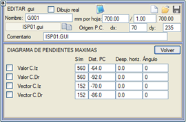
Toprak Hacimleri Diyagramı (Brückner Eğrisi)
Toprak hacimleri diyagramını, mevcut güzergah için veya birleşik olarak (Tip), sayısal ve/veya grafiksel olarak göstermeyi sağlar. Sayısal gösterim için kullanılacak sembol (etiket) tipi ve karşılaştırma düzlemine göre mesafe belirtilmelidir, ayrıca bu etiketler için bir yatay öteleme ve bir açı da belirtilebilir.
Grafiksel gösterim için, grafik için çizgi tipi, karşılaştırma düzlemine göre mesafe ve ölçek (m3/mm) belirtilmelidir.
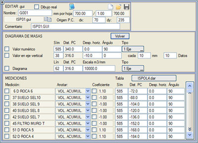
Ayrıca, bilgi bandında, toprak hacimleri diyagramında yer alan malzemelerin (seçilen bir .dar tablosu için) metrajlarını (alan, kısmi hacim veya birikimli hacim) etiketleme imkanı da vardır ve bu değer, o malzeme için .dar tablosunda tanımlanan katsayıdan etkilenebilir veya etkilenmeyebilir. İlgili kutucukları ve değerlerin gösterimi için sembol (etiket) tiplerini, ayrıca karşılaştırma düzlemine olan mesafeyi ve gerekirse bir yatay öteleme ve etiketin dönüş açısını işaretlemek yeterlidir.
DiagMasS.gui ve DiagMasC.gui dosyaları, sırasıyla bir güzergahın ve birleşik toprak hacimleri diyagramının gösterimine dair iyi örneklerdir.
Hız Diyagramı
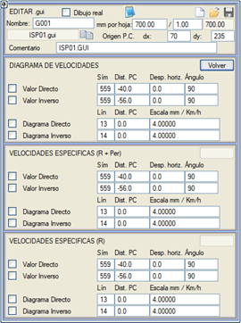Hız diyagramını hem doğrudan (artan KM'ler) hem de ters (azalan KM'ler) yönde sayısal ve/veya grafiksel olarak göstermeyi sağlar. Bu diyagramın daha önce ilgili menüden hesaplanmış olması gerekir.
Sayısal değerler için, hızların (km/s cinsinden) temsil edileceği sayısal etiket tipinin yanı sıra, karşılaştırma düzlemine olan mesafe ve isteğe bağlı olarak etiketlerin bir yatay ötelenmesi ve bir açı belirtilmelidir.
Hız grafiği için, çizgi tipini, karşılaştırma düzlemine olan mesafeyi ve çizim ölçeğini (varsayılan olarak, her km/s için 4 mm kağıt) belirtmek yeterlidir.
Kütüphaneyle birlikte verilen DiagVel.gui dosyası, hız diyagramı için iyi bir örnektir.
Benzer şekilde, özgül hızlar diyagramını göstermek de mümkündür. Bu durumda, bu diyagram yarıçapa göre (bu durumda deverler için yönetmelikte belirtilenler varsayılarak) veya yarıçap ve devere göre (projenin gerçek deverini kullanarak) olabilir. Her ikisi de kullanılırsa, dolayısıyla yönetmelikten sapmaları tespit etmek mümkündür.
Görüş Mesafesi Diyagramı
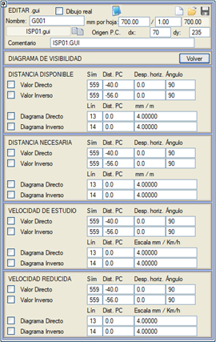Aşağıdakilerin değerini etiketlemeyi veya bir diyagramını çizmeyi sağlar:
- Mevcut görüş mesafesi.
- Gerekli mesafe.
- Etüt hızı
- Düşürülmüş hız.
hem doğrudan hem de ters güzergah için.
Bu verileri gösterebilmek için, ilgili güzergahlarda daha önce ilgili görüş mesafesi etütlerinin yapılmış olması gerekir.
Enkesitler Arası Eğim Diyagramı
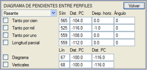Kırmızı kotun her iki arazi enkesiti arasındaki görünür eğimini, yüzde ve/veya binde ve/veya birim başına olarak ve enkesitlerin ara uzunluğunu etiketlemeyi sağlar.
Ayrıca, her iki enkesit arasındaki eğime göre yükselen, alçalan veya yatay bir çizgi ile ve iki sabit yükseklik arasında testere dişi tipi bir diyagram çizilebilir.
Bu diyagram, arazi enkesitlerine göre bu iki yükseklik arasında ve sabit kılavuzda bu iki yükseklikte iki yatay çizgi çizerek (karşılaştırma düzlemine olan mesafeleriyle tanımlanır) dikey çizgiler çizerek tamamlanır.
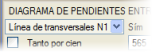Bu diyagram ve bu veriler, Kırmızı Kot yerine, kırmızı kotun kotunu kullanmak yerine enkesitlerden çıkarılan çizgilerin ilk verisine atanabilir.
İlerleme Diyagramı
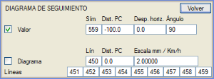Son saha verisinin ve önceki dokuz verinin gerçekleşme yüzdesini içeren bir diyagram çizmeyi ve sonuncusunun değerini etiketlemeyi sağlar.
|